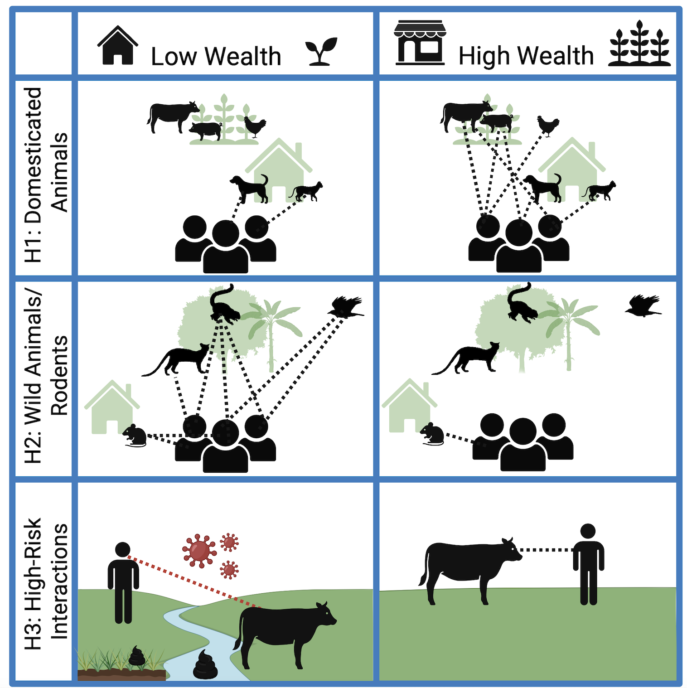

Recent Projects
Predicting zoonotic disease exposure with network modeling

Direct and indirect contact between humans and animals remain the most fundamental and modifiable driver of cross-species pathogen transmission. Remarkably, though, we lack an understanding of what predicts these zoonotic interactions, particularly in rural contexts at the frontline of many zoonoses. We use graph modeling with network simulations to identify the drivers of human-animal contact and zoonotic interactions in rural Madagascar. This research allows us to use demographic traits to guide public health education interventions in resource-limited contexts.
Co-led with Dr. Camille DeSisto
Disentangling energetic and immunoregulatory pathways of hookworm infection and cardiovascular disease risk
Hookworms infect over half a billion people around the world. In resource-limited contexts, hookworm infection can be energetically draining; it may also regulate inflammation and cardiovascular disease risk. In this project, I use structural equation modeling to investigate the energetic and immunoregulatory pathways by which different hookworm species influence nutrition status and blood pressure to produce different health outcomes.
Investigating the adaptive value of disgust and pathogen avoidance behaviors
Disgust is hypothesized to be an evolved behavior to regulate avoidance of dangerous stimuli, especially pathogens. Yet, there is limited direct evidence that disgust actually improves fitness by promoting health behaviors that reduce exposures to parasites. I leverage Bayesian approaches with survey and laboratory data to model how disgust impacts viral exposures and immune activation.
Peer-Reviewed Publications
In Review
Kolinski, L., DeSisto, C.M.M.,Kauffman, K.M., Titcomb, G., Pender, M., Rabezara, J.Y., Kramer, R.A., Moody, J.W., Soarimalala, V., and Nunn, C.L. “Predictors of human-animal contact networks in northeast Madagascar”.
Kauffman, K.M., Pender, M., Rabezara, J.Y., Rahary, P., Janko, M., Kolinski, L., Barrett, T.M., Randriamoria, T.M., Moody, J.W., Soarimalala, V., Lopez-Carr, D., Kramer, R.A., Titcomb, G., and Nunn, C.L. “Farming livelihoods and land use: Sociodemographic drivers of individual movements by smallholder farmers near protected areas”.
Published
Solis, A., Anaeme, A., Titcomb, G., Janko, M., Rabezara, J.Y., Barrett, T.M., Kauffman, K.M., Pender, M., Soarimalala, V., Kolinski, L., Kramer, R.A., Young, H., and Nunn, C.L, 2025. ‚ÄúOne Health Disparities and Blastocystis infection among smallholder farmers in northeastern Madagascar‚Äù. One Health Disparities and Blastocystis infection among smallholder farmers in northeastern Madagascar. PLOS Global Public Health, 5(10), p.e0005189.üîó
Kolinski, L., Barrett, T.M., Kramer, R.A. and Nunn, C.L., 2024. How market integration impacts human disease ecology. Evolution, Medicine, and Public Health, 12(1), pp.229-241.üîó
Beehner, J.C., Alfaro J., Allen C., Ben√Ætez, M.E., Bergman, T., Buehler, M.S.,Carrera, S.C., Chester, E.M., Deschner, T., Fuentes, A., Gault, C.M., Godoy, I., Jack, K.M., Kim, J.D., Kolinski, L., Kulick, N.K., Losch, T., Ordo√±ez, J.C., Perry, S.E., Pinto, F., Reilly, O.T., Tinsley Johnson, and E., Wasserman, M.D, 2022. Using an on-site laboratory for fecal steroid analysis in wild white-faced capuchins. General and Comparative Endocrinology, 329, p.114109.üîó
Kolinski, L., and Milich, K.M., 2021. Human-Wildlife Conflict Mitigation Impacts Community Perceptions around Kibale National Park, Uganda. Diversity, 13(4), 145.üîó
Milich, K.M., Sorbello, K., Kolinski, L., Busobozi, R. and Kugonza, M., 2021. Case study of participatory action research for wildlife conservation. Conservation Science and Practice, 3(2), p.e347.üîó